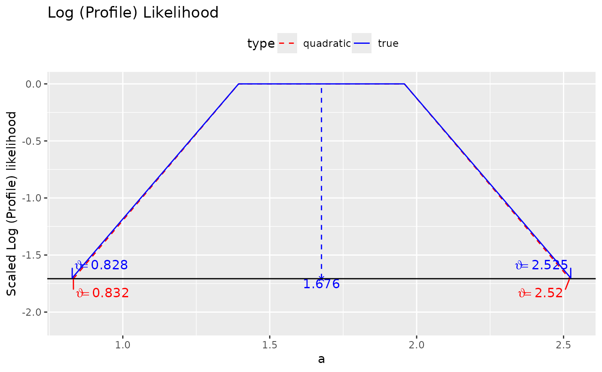
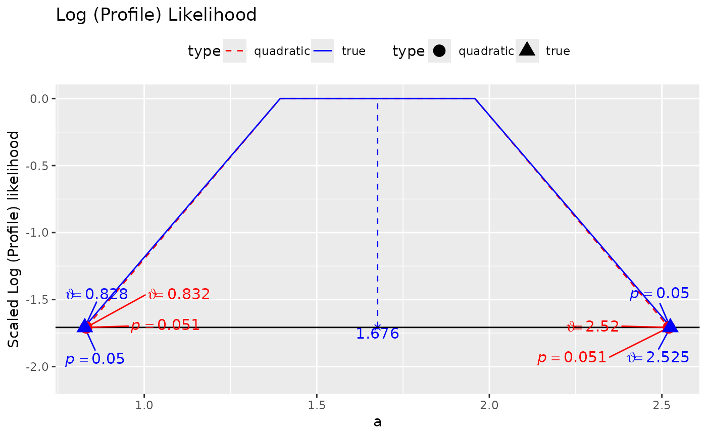

Visualize the log profile likelihood of a parameter fixed to values in a range.
Arguments
- x
The output of
loglike_compare().- y
Not used.
- type
Character. If
"ggplot2", will useggplot2::ggplot()to plot the graph. If"default", will use R base graphics, Theggplot2version plots more information. Default is"ggplot2".- size_label
The relative size of the labels for thetas (and p-values, if requested) in the plot, determined by
ggplot2::rel(). Default is 4.- size_point
The relative size of the points to be added if p-values are requested in the plot, determined by
ggplot2::rel(). Default is 4.- nd_theta
The number of decimal places for the labels of theta. Default is 3.
- nd_pvalue
The number of decimal places for the labels of p-values. Default is 3.
- size_theta
Deprecated. No longer used.
- size_pvalue
Deprecated. No longer used.
- add_pvalues
If
TRUE, likelihood ratio test p-values will be included for the confidence limits. Only available iftype = "ggplot2".- ...
Optional arguments. Ignored.
Value
Nothing if type = "default", the generated ggplot2::ggplot()
graph if type = "ggplot2".
Details
Given the output of loglike_compare(), it plots the log
profile likelihood based on quadratic approximation and that
based on the original log-likelihood. The log profile likelihood
is scaled to have a maximum of zero (at the point estimate) as
suggested by Pawitan (2013).
References
Pawitan, Y. (2013). In all likelihood: Statistical modelling and inference using likelihood. Oxford University Press.
Examples
## loglike_compare
library(lavaan)
data(simple_med)
dat <- simple_med
mod <-
"
m ~ a * x
y ~ b * m
ab := a * b
"
fit <- lavaan::sem(mod, simple_med, fixed.x = FALSE)
# Four points are used just for illustration
# At least 21 points should be used for a smooth plot
# Remove try_k_more in real applications. It is set
# to run such that this example is not too slow.
# use_pbapply can be removed or set to TRUE to show the progress.
ll_a <- loglike_compare(fit, par_i = "m ~ x", n_points = 4,
try_k_more = 0,
use_pbapply = FALSE)
plot(ll_a)

plot(ll_a, add_pvalues = TRUE)

# See the vignette "loglike" for an example for the
# indirect effect.